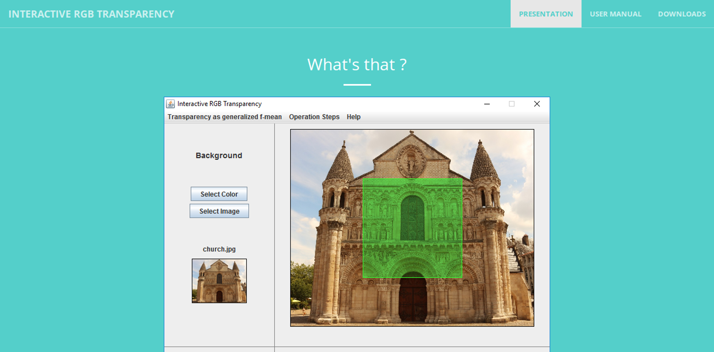

Interactive RGB Transparency

Description
L’objectif de mon stage de fin de licence était d’améliorer un logiciel existant (également réalisé lors d’un stage de fin de licence) sur la gestion de la transparence entre deux images. Il existe différentes façons de mélanger des couleurs comme la synthèse additive (qui correspond à la juxtaposition de zones colorées comme sur les écrans) ou la synthèse soustractive (qui correspond à la superposition de filtres colorés). Actuellement, seule la transparence additive est proposée par les logiciels les plus usuels tels que Powerpoint. Le logiciel que je modifie permet de passer de la transparence additive à la transparence soustractive.
Transparence Intermédiaire
Transparence Soustractive
Dans ce logiciel la transparence inverse est également possible, cela consiste à retrouver la couleur d’arrière-plan pour permettre, par exemple, un dévernissage virtuel de tableaux :
Mon objectif était d’implémenter un nouveau modèle qui consiste à généraliser les lois de
mélange à travers une fonction : f(x) = xp(1 − x)q
Cette fonction permet de retrouver tous les types de transparence en faisant varier p et q.
Par exemple pour p = 1 et q = 0, on obtient la transparence additive et pour q = 0 et p qui tend
vers 0, on obtient la transparence soustractive.
Le logiciel est divisé en trois parties. J'ai corrigé quelques bugs de la première partie : "From subtractive to additive transparency". Puis j'ai crée les parties "Transparency as generalized f-mean" et "Translecency by a scattering layer".
Je devais également réaliser un site internet pour présenter le logiciel et également permettre son téléchargement.
Le site que j'ai réalisé est disponible à cette adresse : http://rgbtransparency.edel.univ-poitiers.fr
Dans le cas où le site aurait été modifié, vous pouvez retrouver ma version sur cette page
Remerciements
Je tiens à remercier mon maître de stage M. SIMONOT qui m'a permis de perfectionner mes compétences en JAVA à travers ce stage qui fût très intéressant.
Juin 2016